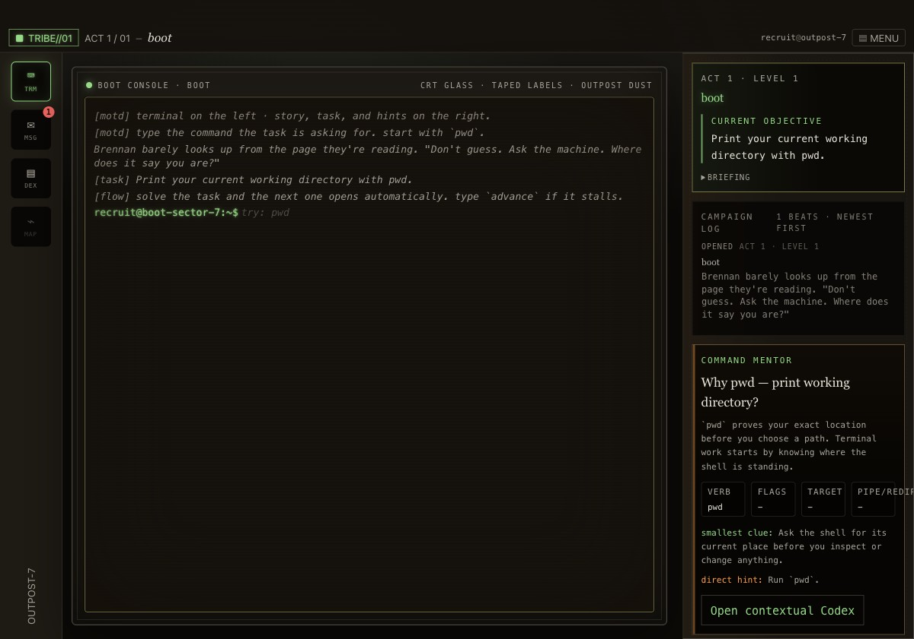
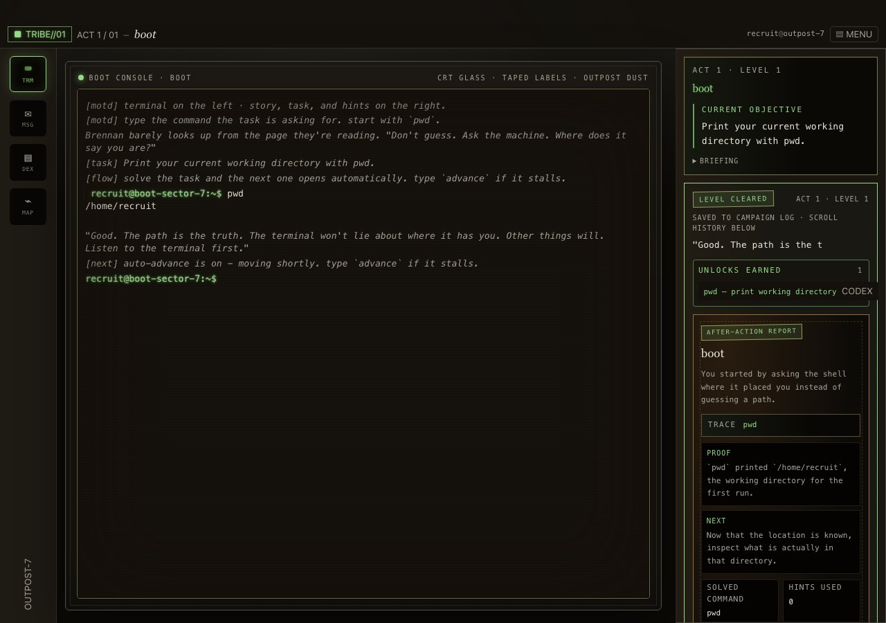
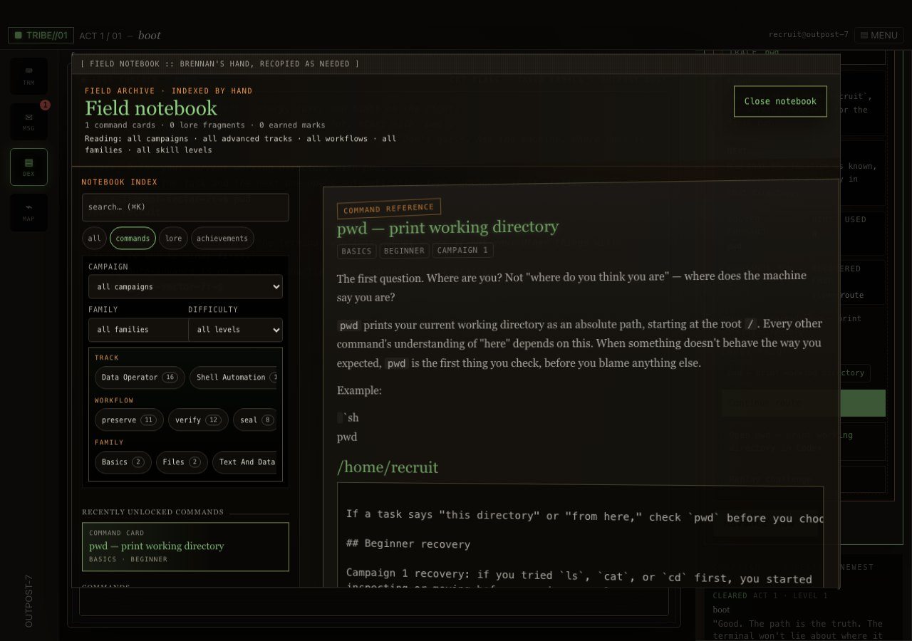

Read the objective
The level frames the shell command as a mission action, with hints and mentor context nearby.
briefing // live operation
TerminalTribe teaches Linux terminal skills through a safe simulated shell, authored missions, recovered field notes, and visible proof that each command did something useful. Open Campaign 1, read the objective, type the command, and watch the route change. This GitHub page is the pointer, not the source tree.
field evidence // screenshots from play
These captures come from the live TerminalTribe site: objective, typed command, level-clear proof, and the field notebook that unlocks as you learn.

The level frames the shell command as a mission action, with hints and mentor context nearby.

Terminal output becomes progress, after-action proof, and an unlocked command reference.

The field notebook turns each learned command into a reference you can revisit.
Campaign 1 opens in the browser without account or payment, covering movement, inspection, file operations, links, search, archives, and recovery habits.
Commands are tied to recovered documents, route progress, and after-action context, so practice feels like operating instead of memorizing.
Complete Unlock opens Campaigns 2-6 and Advanced Operations tracks for Data Operator, Shell Automation, and Incident Response practice.
This repository is a promotional pointer. The game source code is not published here; the playable product lives at TerminalTribe.com.
note: This GitHub Pages surface is not the canonical site. Search engines should index terminaltribe.com instead.